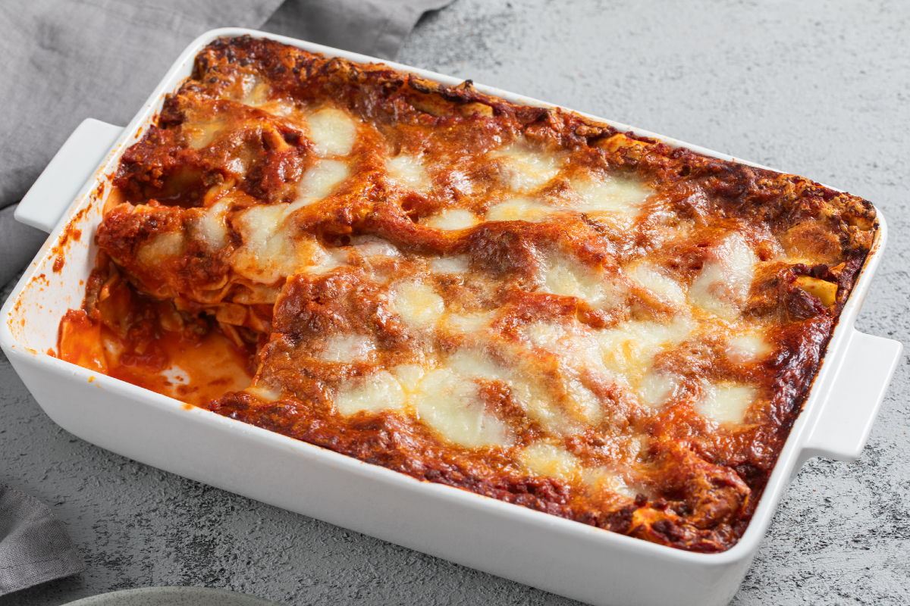

Lasagne
Porzioni: 4
Preparazione: 15 minuti
Cottura: 30 minuti in forno ventilato
Ingredienti
Le dosi variano in base ai gusti
- Ragù
- Besciamella
- Pancetta arrotolata (circa 4 fette strato)
- Parmigiano grattugiato
Procedimento
- Accendere il forno a 180° in modo tale che si scaldi durante la preparazione della lasagna.
- Iniziare con uno strato di ragù
Riporre sopra di esso la sfoglia
Aggiungere il ragù sopra sfoglia
Aggiungere la pancetta e la besciamella
Ripetere fino al completamento della lasagna.
Alla fine dare una bella spolverato con il parmigiano grattugiato - Cuoci per 30 minuti a 180° in forno

Torna alla pagina iniziale